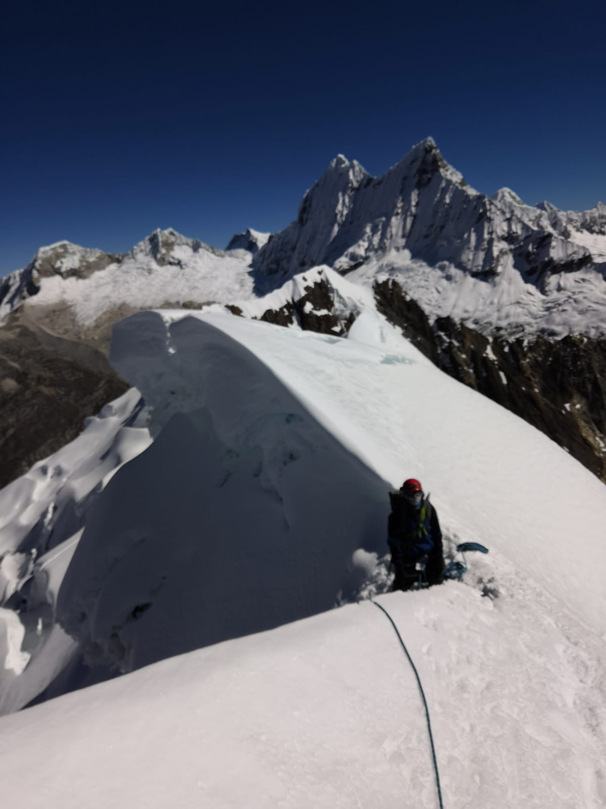

⬅
Do you like climbing mountains? Holy moly, I do too!

SOME OF MY PAST CLIMBS
- San Bernardo (4151m F) + Mausy (4563m F), Cordón del Plata, Argentina
- Franke (4811m F), Cordón del Plata, Argentina
- Plata (5968m F) + Vallecitos (5460m F), Cordón del Plata, Argentina
- Vallunaraju (5686m PD), Cordillera Blanca, Perú
- Yannapaccha (5460m AD), Cordillera Blanca, Perú
- Pisco (5752m PD), Cordillera Blanca, Perú
- Ishinca (5530m PD), Cordillera Blanca, Perú
- Urus Este (5420m PD), Cordillera Blanca, Perú
- Incahuasi (6621m F), Catamarca, Argentina
- Incachico (5861m F), Catamarca, Argentina
- Falso Morocho (4478m F), Catamarca, Argentina
- Bertrand (5260m F), Catamarca, Argentina
- San Francisco (x2) (6016m F), Catamarca, Argentina
- Barrancas Blancas (6119m F), Atacama, Chile
- Mulas Muertas (5908m F), Catamarca, Argentina
- Ojos del Salado (6893m F), Catamarca, Argentina
- Aconcagua by normal route (x2) (6962m F), Cordillera Principal, Argentina
FAILURES
- Tocllaraju (6034m D-), Cordillera Blanca, Perú
- Herradura del Salto (5153m F), Cordón del Plata, Argentina
- Lomas Amarillas (5159m F), Cordón del Plata, Argentina
THE ONES I DREAM ABOUT
- Cerro Torre, Parque Nacional Los Glaciares, Argentina
- Chacraraju, Cordillera Blanca, Perú
- Cayesh, Cordillera Blanca, Perú
- Denali by Slovak Direct, Alaska, United States
- Some unclimbed peak in the Karakoram
- Some unclimbed peak in Cordillera Darwin